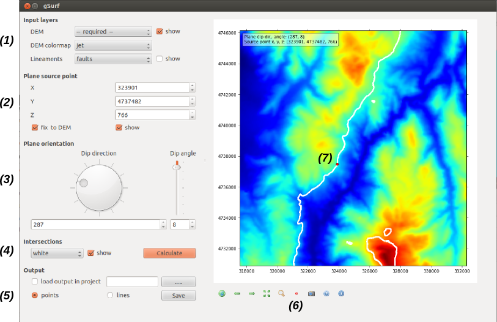

qgSurf vers. 0.1.3
Beta release, October, 7, 2012
M. Alberti - alberti.m65@gmail.com
License: GPL v. 3.0
Created with Python 2.7, Eclipse + PyDev.
Tested in Quantum Gis 1.8.0 - Ubuntu 12.04, Windows Vista.
Aim
This Quantum GIS plugin allows to calculate the intersection points between a plane and a DEM.
A presentation in Italian of the algorithm theoretical bases is in
Intersezioni tra DEM e superfici planari, un tema di interesse in geologia.
An example of application is described in
gSurf: una applicazione Python per calcolare interattivamente l'intersezione fra piani e DEM.
GUI summary
The application functionalities, grouped by subject, are described. See the figure below for number references.

1
Definition of input DEM, DEM colomap and of an optional linear shapefile (e.g., fault traces).
Control of their visibility.
2 and 6
Definition of the "source point" location (i.e., a point that lies in the plane to be created).
The button in 6 (symbol: red circle) allows to define the source point in the map.
The elevation can be constrained to equal the local DEM elevation (option: 'fix to DEM').
3
Definition of the geological plane orientation, expressed by its dip direction and dip angle.
4
Intersection visibility, color and calculation.
5
Definition of output shapefile (with line or point geometry).
6
Navigation toolbar that allows to zoom, pan, save the map as an image, and also to set the source point location
in the map (red circle).
7
The map visualization area with the calculated intersections (white).